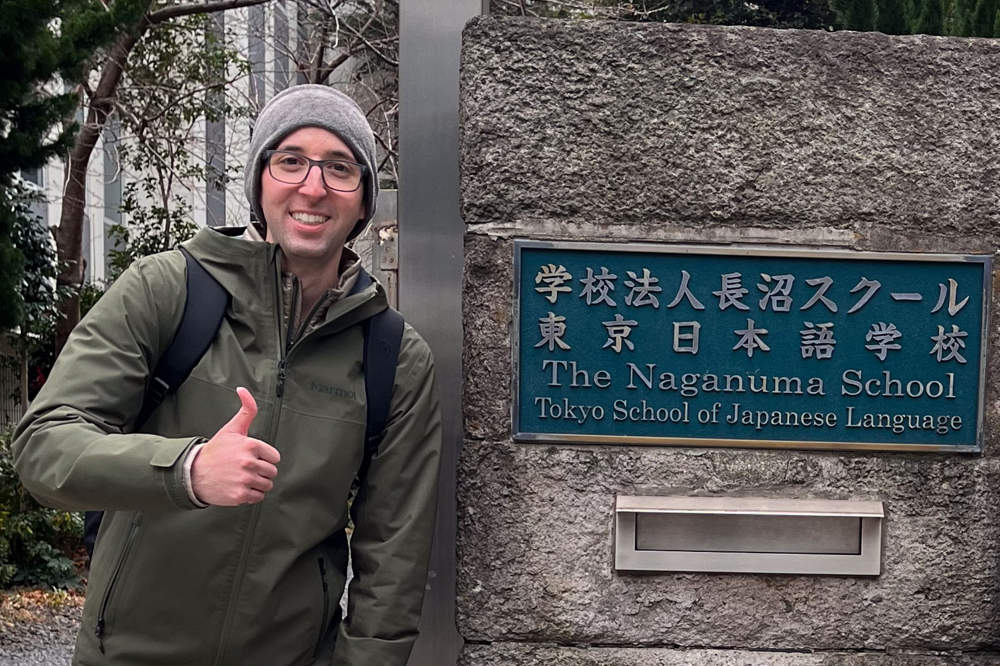
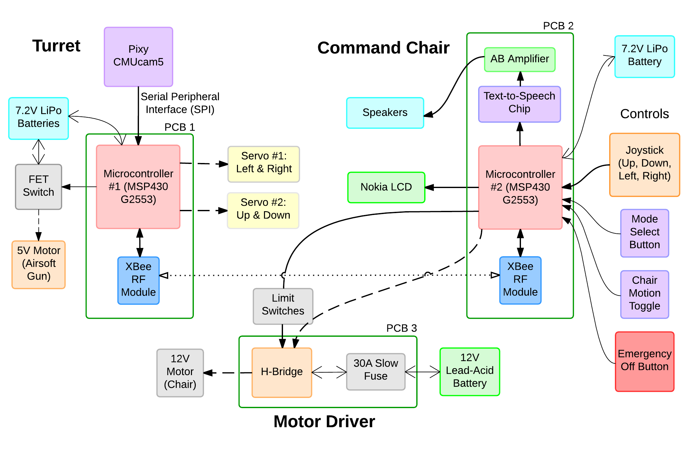
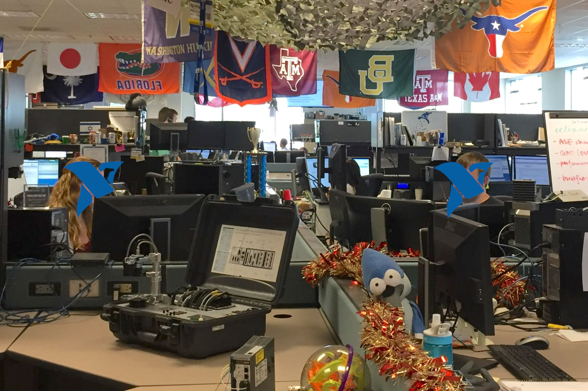
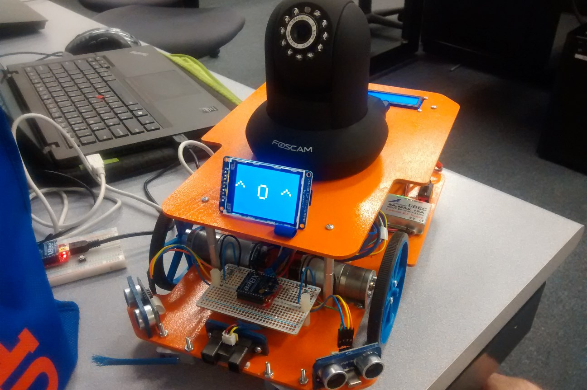
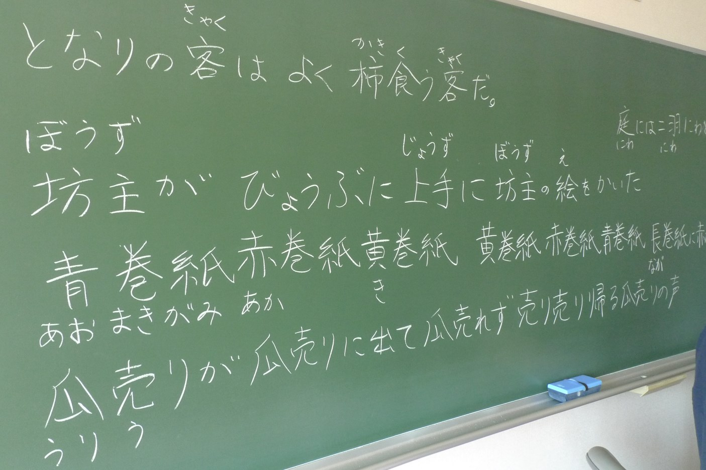

I'm Alex Ciccone,
a computer engineer and aspiring data analyst currently studying Japanese in Tokyo, Japan.It's nice to meet you.
My name is Alex Ciccone. I’m a computer engineer with a growing focus on data analytics and a strong interest in data science, web technologies, Trust & Safety, technical support, and quality assurance. I received bachelor's degrees in Computer Engineering and East Asian Languages & Literatures (Japanese) from the University of Florida.
Most recently I worked as an Operations Technical Analyst at Indeed in Austin, Texas. Before then I worked as an Applications Engineer with National Instruments. I learned a great deal about delivering comprehensive and personalized front-line technical support across a wide range of hardware and software suites.
I am currently expanding my Japanese and technical skills as I look for a career where I can challenge myself and make a positive difference in people’s lives.
Thank you for visiting my portfolio. I’d love to hear from you. Feel free to reach out by email or connect with me on LinkedIn.
Here are some highlights from my time at The Naganuma School, Indeed, National Instruments, the University of Florida, and Kansai Gaidai University.

I am currently studying Advanced Business Japanese at The Naganuma School in Shibuya, Tokyo, where I attend three hours of class each weekday as part of a one-year program. I am strengthening my professional communication skills and deepening my understanding of Japanese workplace culture as I prepare to build a career and community in Japan. I am preparing to take the Japanese-Language Proficiency Test (JLPT) N1 in July 2026.
Some of my favorite coursework has been group presentations on tourism revitalization in Hiroshima Prefecture, the DJI Osmo Pocket 3 camera as a hit product, and a sales improvement plan for a local tapioca (boba tea) shop.
I chose to study in Japan because it has long been my hope to build a career here and give back in some way to the people and communities that have shown me so much kindness over the years.

At Indeed, I worked as an Operations Technical Analyst on the Aggregation Operations Tech team, where I created and maintained data feeds for tens of thousands of jobs over a period of more than six years. Using technologies such as HTML, CSS, regular expressions, and SQL, I helped ensure job data remained accurate, relevant, and up to date for job seekers.
What I appreciated most about the role was the chance to contribute to work with real impact while collaborating with talented colleagues across teams and markets. I specialized in Japanese market operations, where I used my language skills and cultural knowledge to navigate unique challenges and improve the experience for job seekers and clients in Japan. I also partnered closely with Client Success and other cross-functional teams to resolve issues, improve workflows, and maintain high-quality job data.
I am especially grateful for the opportunities the role gave me to keep learning, take on new challenges, and support others along the way. Working with Trust & Safety to help address fraudulent postings and mentoring newer teammates were both especially meaningful parts of my time there. It was a role that strengthened both my technical skills and my appreciation for thoughtful, collaborative work that helps people in practical ways.

My previous position was with National Instruments as an Applications Engineer in their Engineering Leadership Program. My primary responsibility was providing prompt and comprehensive technical support to a variety of clients, including students, engineers, scientists, researchers, and technicians. This support typically involved troubleshooting LabVIEW programs built by the client along with their hardware/software configurations.
We often collaborated with R&D to address challenging bugs or limitations in our customers’ systems. We also proactively reached out to our clients to provide them with resources or training to help them be successful in their role with our hardware and software. I enjoyed my time at NI and feel like I made a positive impact on the hundreds of clients I worked with, while also increasing brand loyalty and the adoption of our products and services.
I teamed up with my friend and classmate Devin Holland to design and build an automated, wireless toy turret and haptic feedback chair. Our goal was to create a system that was interactive, entertaining, memorable, and fun for the user and any onlookers. Star Command used a vision sensor to identify and track moving objects of various colors while panning and tilting a custom-built (and 3D-printed) arm. An airsoft gun mounted to the arm would then engage the targets with soft, plastic BBs.
In addition to the automatic mode, the user could also manually control the command chair via a joystick, responsively yawing the chair left and right in tandem with the turret while producing a myriad of audio and visual effects. The project incorporated several custom-designed and milled PCBs and was a hit with our professors and fellow students. For more details and pictures please see our short presentation on Dropbox.

I designed and built a robot which played rock-paper-scissors with human opponents using computer vision algorithms and an IP camera to detect hand gestures. RoshamRobo featured a differential drive and navigated itself autonomously using infrared, ultrasonic, and “whisker” bump sensors controlled by an Arduino microcontroller. Its chassis was designed in SolidWorks and laser cut from balsa wood. XBee RF modules were used for communication between the microcontroller and a laptop (where the intensive image processing occurred). For more details and the source code please see the full report on Dropbox.

I attended Kansai Gaidai University in Hirakata-shi, Osaka, Japan for an academic year as an exchange student. I completed my third year of Japanese language studies there while taking courses in modern Japanese literature, culture, anthropology, and political science. I am very gracious to have spent a semester with a host family, and to have participated in several small student organizations ("circles") including KGU's English Studying Society (英語研究会) and Japanese Sign Language Circle (手話サークル). I maintained a short photo blog during my second semester. Feel free to take a look at Blogger – Tabi no Sora.
I am passionate about continuing to learn the Japanese language and developing insights into Japanese culture, society, and history. I am certified to understand Japanese at an upper-intermediate level (having passed the 2nd highest level [N2] of the Japanese-Language Proficiency Test), and am actively working towards an advanced level of understanding through independent study and weekly language classes.